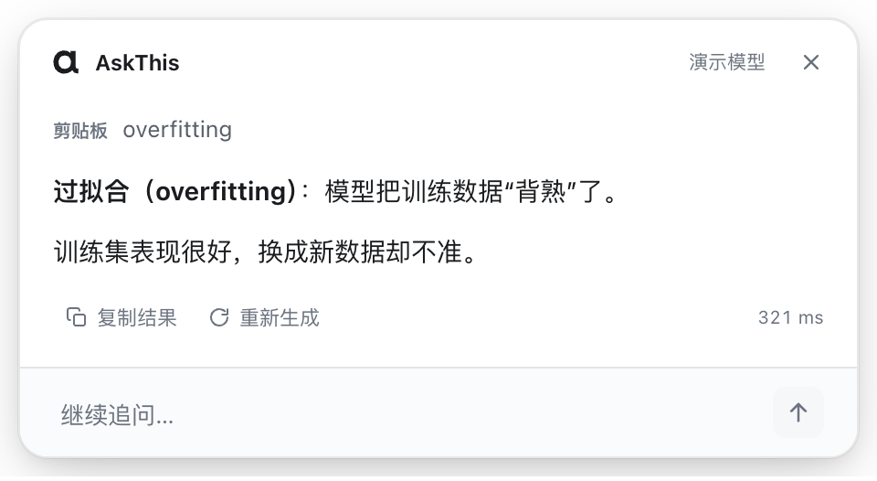
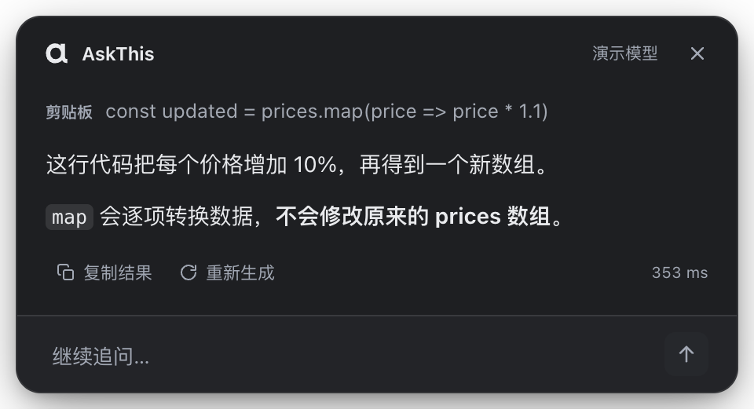
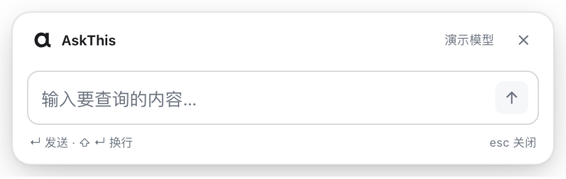

选中就问，
接着做你的事。
一个不懂的词、一段难读的话，不必先打开聊天窗口。按一个快捷键，把疑问放进小卡片，再回到正在做的事。

不把一个小问题，
变成一次大切换。
读书、写作、看代码。需要的是一个解释，不一定是一整个聊天工作台。



以上均为真实应用截图，内容来自本地演示服务，不代表线上模型性能。截图中的「剪贴板」为显式模式；默认自动模式无选区时只等待输入。英文界面可在设置中切换。
阅读
解释术语、翻译句子，少离开一次正在读的内容。
写作
手动输入或粘贴草稿，切换润色、总结等预设。
代码
问清一小段逻辑，不把速查变成大型工作台。
给下一个疑问，
留一个快捷键。
macOS
.DMG / v0.1.5芯片不确定？苹果菜单 →「关于本机」。M 系列选 Apple Silicon，Intel 选 Intel。macOS 是主要验证平台，未覆盖所有芯片和系统版本。
Windows
.EXE / v0.1.5常见 Intel / AMD 电脑选 x64；Windows ARM 设备选 arm64。旧版已真机验证，v0.1.5 交互仍待 Windows 真机复验。
Linux 提供构建，尚未真机验证；Wayland 建议手动输入 / 粘贴。安装包存在不等于各平台的所有交互都已验证。
下载由 GitHub Releases 托管。若 v0.1.5 直链暂未就绪，请先查看发布页；无需下载 Source code。
- 01
安装，打开设置
Mac：打开 .dmg，把 AskThis 拖入「应用程序」，再从那里启动。Windows：运行对应架构的安装包。手动启动会打开设置，之后常驻菜单栏 / 托盘。
Mac 读取选区需「辅助功能」权限。请在系统设置中授权后重启；更新后可能需要重新添加应用并授权。
遇到系统的安装拦截？
macOS 发行版尚无 Apple Developer ID 签名与公证。确认下载来自本仓库后，按系统「打开」或「隐私与安全性 → 仍要打开」操作，不要关闭整个系统的安全保护。Windows 若出现 SmartScreen，先核实来源，再选择「更多信息 → 仍要运行」。
- 02
连接模型，不用给 AskThis 注册账号
打开 设置 → 模型服务，选择服务，保存自己的 API 密钥。点击「获取模型列表」，选定账号可用的模型，再用「测试连接」检查配置。
使用云端 API
支持 OpenAI、Anthropic、DeepSeek、Gemini、OpenRouter、Kimi 等，以及兼容 API。密钥需到相应服务商的 API 平台创建；云端费用由服务商单独收取。网页聊天会员不等于 API 额度。
使用 Ollama / LM Studio 本地模型
先启动本地模型与 API 服务，再在 AskThis 配置对应地址、接口和模型。本地服务的安装、模型下载及硬件资源需自行准备；使用本地服务时不会产生云端模型调用费。
- 03
先直接问，再试选中就问
取消文字选区，按 ⌥⇧D（Mac）/ Alt+Shift+D（Windows、Linux）。直接输入下面的问题，按 Enter。
用一句话解释什么是递归
再到网页或文档里选一个词，按同一个快捷键。读到回答后可以追问；复制不会关闭卡片，想离开时按 Esc。
你的文字，
由你决定去哪里。
- 请求直达所选服务
- 文字直接发送到你配置的模型服务，不经过 AskThis 自建中转。使用云端服务时，请先了解它的数据政策，不要发送敏感信息。
- 历史留在本机
- 查询历史保存在本机，可关闭保存或清空。API 密钥使用系统安全存储加密；不可用时仅保存在内存，不静默写成明文。
- 不查旧剪贴板
- 默认自动模式有选区就查询，无选区只等待输入；你也可以选择始终手动输入。只有显式启用剪贴板模式或自动模式的剪贴板回退，才会直接查询剪贴板。
- 没有遥测
- 应用不含统计、崩溃上报或遥测。本网站也不加载分析脚本、不设置追踪 Cookie。代码以 MIT 许可证公开。
AskThis 免费吗？我还需要付什么钱？
应用免费、MIT 开源，不需要 AskThis 账号。云端模型需要你自己的 API 密钥，费用按服务商的价格和用量单独收取；AskThis 不附送模型额度。也可连接已运行的 Ollama / LM Studio 本地服务。
我已经有聊天会员，还需要 API 密钥吗？
网页聊天会员与 API 通常是不同的服务和计费渠道。请到服务商的 API 平台确认密钥、余额与模型权限，不要把聊天网站地址当作 API 地址，也不要把登录密码填进密钥栏。
没有选中文字，为什么出现空白卡片？
这是默认行为，不是故障。直接输入或主动粘贴内容，再按 Enter。AskThis 不会因为你之前复制过什么，就在没有选区时自动把它提交给 AI。
能读图片、截图或扫描版 PDF 吗？
不能。当前处理文字，没有 OCR / 截图识字。图片、扫描件及不可选择的界面，需要先用其他工具提取文字，再手动粘贴。普通 PDF 是否能直接读取，取决于它是否有可选文字及应用支持。
Mac 更新后读不到选区，怎么办？
更新可能使原来的辅助功能授权失效。到「系统设置 → 隐私与安全性 → 辅助功能」检查 AskThis；若只切换开关无效，移除旧条目、重新添加「应用程序」中的 AskThis，授权后重启。钥匙串提示需由你在系统中确认。
快捷键或查询没反应，先检查什么？
先确认应用正在运行，再到「设置 → 快捷键与交互」检查冲突或更换组合。请求失败时，检查当前服务和模型、API 密钥、账号余额及模型权限。代理用户还需确认系统代理已启用。
若目标应用不支持读取选区，可先复制，再打开卡片手动粘贴；文字捕获取决于目标应用及系统权限，并非所有地方都能直接读取。
在终端、Windows 或 Linux 上有什么限制？
选区捕获可能模拟复制，Windows / Linux 的 Ctrl+C 可能中断终端进程，且无法保证恢复图片等非文本剪贴板。终端场景建议在设置中选「手动输入」。Linux X11 依赖 xdotool；Wayland 不直接捕获选区，全局快捷键也受桌面环境限制。
macOS 是当前主要验证平台。Windows 旧版验证过安装、启动和快捷键，v0.1.5 交互待真机复验；Linux 尚未真机验证。跨平台构建不等于每项功能均经过真机测试。
我能更换模型、提示词或界面语言吗？
可以。支持多服务商与自定义兼容 API，服务和模型以账号实际可用范围为准；内置速查、翻译、代码解释、总结、润色等提示词，也可自己修改。设置中可选择中文 / English、浅色 / 深色主题与自己的快捷键。
少一点切换，多一点明白。
下载 AskThis